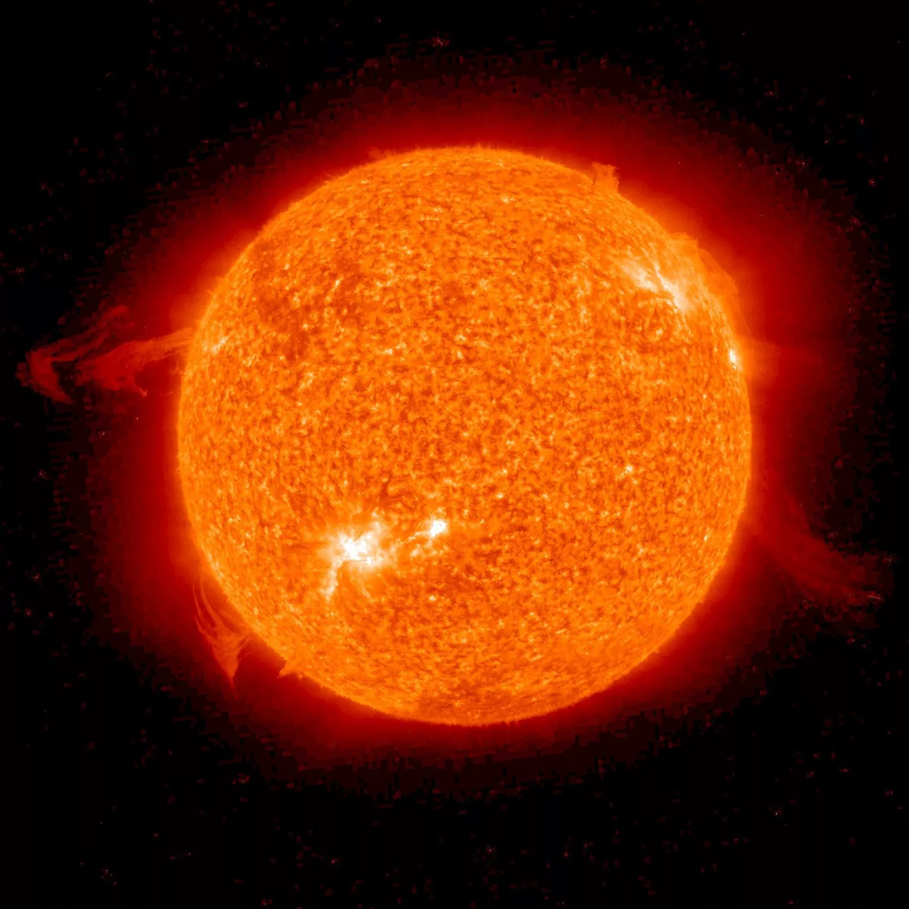
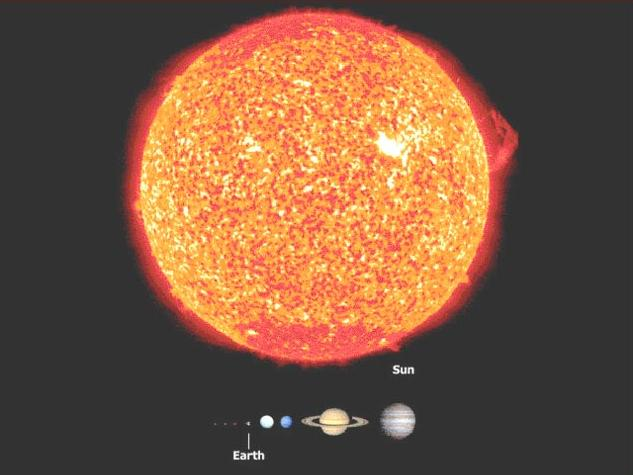

O Sol é a estrela no centro do Sistema Solar e a principal fonte de energia da Terra.

Ele concentra cerca de 99,86% da massa do Sistema Solar.

Com cerca de 4,6 bilhões de anos, o Sol é formado principalmente por hidrogênio e hélio. Em seu núcleo, a fusão nuclear transforma hidrogênio em hélio e libera a energia que chega à Terra em cerca de 8 minutos e 20 segundos. O vento solar forma a heliosfera, uma região que envolve o Sistema Solar.